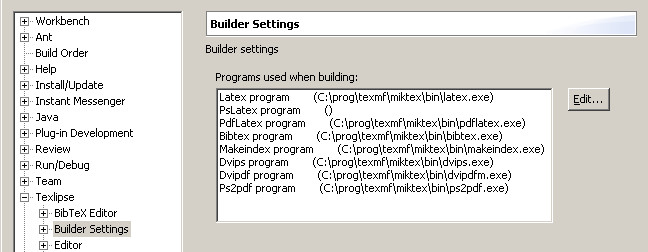

Before you can configure the TeXlipse plugin you must have some working LaTeX distribution installed on your system.
0. Make sure you have a working Tex distribution. You need to have at least the latex program, but Bibtex, Makeindex, DviPdf, DviPs, PdfLatex,PsLatex and Ps2Pdf are also recommended.
1. Open Window > Preferences, and from there the TeXlipse > Builder Settings preference page.
2. Use the Browse... button to set the location of the installation (Bin for binary) directory of your LaTeX distribution. To use the selected directory, click the Apply button. The plugin will automatically set the correct paths for all the listed programs that are located in the given directory. If some of the programs is not found in the directory, the parentheses after the program name are empty (in the following image, such a program is the PsLatex-program).

3. To set the path of a particular program, select the program and click the Edit... button. The following window will appear. Use the Browse... button to set the program path. If you want to change some parameters for the program you can also do that here. Confirm the path and the parameters by clicking the OK button.

4. Next, select the Viewer settings page. You must set paths of the used viewers. As with the LaTeX distribution at step 2, set the correct path for the viewer you are going to use. Also make sure that the viewer is registered to the right format (for example, pdf for acroread)
Note also, that the plugin uses the first viewer on the list that matches the current output format

5. To configure Inverse Search please
see Building and previewing